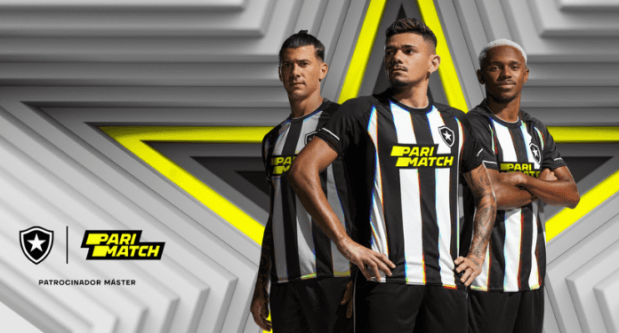

13 JAN 23
2

Eu sou botafoguense!
Alessandro Scheppa, de 21 anos, é o novo reforço do Botafogo. O jogador, cujo apelido é "Zé Gatinha", chamou a atenção nas redes sociais e chegou a virar piada na web antes mesmo de sua apresentação oficial pelo clube carioca. A contratação poderia ser apenas mais uma, mas o apelido não deixou o atleta passar em branco.